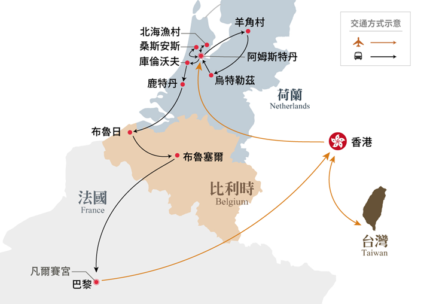

Day
01
4 月 6 日
星期二
TAIWAN → HK
高雄 ✈ 香港 ✈ 阿姆斯特丹
今日前往高雄小港機場，搭乘國泰航空經香港飛往荷蘭阿姆斯特丹，展開為期 10 天的歐洲之旅。
晚上 7 點多起飛，建議下午先吃飽再到機場；香港段轉機 2 小時，長程段上機後調整為歐洲時間作息，盡量睡。
時差、天氣、貨幣等資訊整理自網路公開資料（2026 年 10 月查詢），出發前請再確認一次。
4 月已進入歐洲夏令時間（2027/3/28 起），荷比法三國同為 CEST（UTC+2），台灣是 UTC+8。香港與台灣無時差。
春季天氣多變，陣雨頻繁（巴黎 4 月平均約 12 個雨天），早晚涼、中午有陽光時舒適。日落約 20:30，白天很長。
荷比法三國皆用歐元。匯率為 2026 年 10 月參考值，出發前請再查。歐洲信用卡與感應支付非常普及，現金只需準備小額（小費、市集、公廁 €0.5–1）。
台灣電器需轉接頭（團費已含贈送轉接頭）。手機、相機充電器多為 100–240V 通用，不需變壓器；吹風機等高功率電器請確認支援 230V。
旅行社每人贈送一張歐洲網卡（歐洲 43 國通用）。另提供無線耳機導覽機，接收距離約 100 公尺。
荷蘭語／法語／荷語＋法語（布魯塞爾），觀光區英語皆通。團費已含導遊領隊小費 €120。餐廳帳單通常已含服務費，滿意可額外留零頭。
巴黎地鐵、艾菲爾鐵塔、聖心堂階梯、老佛爺百貨周邊扒手多；阿姆斯特丹注意腳踏車道勿站立；布魯塞爾黃金廣場人潮擁擠請顧好隨身物品。護照影本與正本分開放。
行程表第 7 天（4/12）是週一，凡爾賽宮官方每週一休館；第 8 天（4/13）是週二，羅浮宮官方每週二休館。
旅行社通常會把兩天對調或另行調整（例如週一先走羅浮宮、週二改走凡爾賽宮），但這份行程表上還沒反映。建議出發前打給佳騰 07-342-5656 確認實際入內日期，以免「法國雙宮」變成只看外觀。
EES 出入境系統（2026 年 4 月起全面運作）：首次入境申根區會在阿姆斯特丹機場採集指紋與臉部影像，通關時間可能較長，請耐心排隊。
ETIAS 旅行授權：台灣護照免簽，但 ETIAS 上路後需在出發前線上申請（費用 €20，18 歲以下與 70 歲以上免費，效期 3 年）。歐盟已把原訂 2026 Q4 的啟用時間延後，2027 年啟用的可能性高，啟用後有約 6 個月過渡期。出發前 1–2 個月請再查官方網站 travel-europe.europa.eu/etias，或請旅行社協助。
護照效期需超過離開申根區日期 3 個月以上（建議 6 個月以上），且為 10 年內核發。
2027 年開放日期為 3 月 18 日至 5 月 9 日，每日 08:00–19:00。歷年鬱金香盛開高峰落在 4 月 10 日至 30 日之間，本團 4/9 造訪，若春天氣溫正常應能看到大片鬱金香；若遇寒春則部分品種可能還沒全開，以現場為準。中旬為人潮高峰，建議早點進園。
2026 年 1 月起非歐盟訪客門票調漲為 €32（團體 €28），入館採預約時段制且安檢嚴格，建議輕裝入館，大型背包與行李需寄物。
| 航班 | 航段 | 起飛 | 抵達 | 日期 |
|---|---|---|---|---|
| CX 459 | 高雄 → 香港 | 19:10 | 21:20 | 4/6（二） |
| CX 271 | 香港 → 阿姆斯特丹 | 23:15 | 06:55+1 | 4/6 → 4/7（三） |
| CX 260 | 巴黎 → 香港 | 12:05 | 06:15+1 | 4/14 → 4/15（四） |
| CX 432 | 香港 → 高雄 | 08:35 | 10:15 | 4/15（四） |
去程香港轉機約 2 小時，長程段約 13 小時；回程香港轉機約 2 小時 20 分。如遇航空公司航班變動，旅行社保有最後變動之權利。
由荷蘭一路往南到巴黎，不走回頭路。地圖取自旅行社行程表。

車程為 Google 地圖一般路況的估算，實際依交通與停留時間增減。
今日前往高雄小港機場，搭乘國泰航空經香港飛往荷蘭阿姆斯特丹，展開為期 10 天的歐洲之旅。
阿姆斯特丹 → 桑斯安斯 Zaanse Schans → 沃倫丹 Volendam → 阿姆斯特丹市區＋運河遊船
🚌 車程史基浦機場→桑斯安斯 約 30 分桑斯安斯→沃倫丹 約 30 分沃倫丹→阿姆斯特丹 約 30 分
保留多座造型各異的風車，各自擔負榨油、製漆、鋸木等古老工藝，至今仍緩緩轉動。村內有傳統木鞋工廠，展示白楊木挖空製作荷蘭木鞋的過程。
六百年歷史的荷蘭漁村，彩色木屋、傳統漁港環繞湖畔如珍珠項鍊，保有純樸水鄉風情。
舊皇宮、水壩廣場、全歐最負盛名的紅燈區櫥窗。
鑽石交易 16 世紀即引進荷蘭，阿姆斯特丹至今仍是全球重要鑽石中心之一。
搭乘玻璃船遊覽阿姆斯特丹運河。
阿姆斯特丹 → 羊角村 Giethoorn → 烏特勒支 Utrecht → 阿姆斯特丹
🚌 車程阿姆斯特丹→羊角村 約 1 小時 40 分羊角村→烏特勒支 約 1 小時 30 分烏特勒支→阿姆斯特丹 約 45 分
有「荷蘭威尼斯」「綠色威尼斯」之稱，村落以蜿蜒運河與小橋相連，沒有車流。屋頂由蘆葦編成，冬暖夏涼，過去是窮苦就地取材，今日反成高收入職業的住家。
荷蘭交通樞紐，以雙層運河景致聞名，是米飛兔的故鄉，擁有全荷蘭最高的主教塔與烏特勒支大學。
始建於 1254 年的哥德式教堂，曾是荷蘭最大教堂，擁有壯觀拱頂與精美彩繪玻璃。教堂前有 Graaf Jan van Nassau 雕像。
阿姆斯特丹 → 庫肯霍夫花園 Keukenhof → 鹿特丹 Rotterdam（方塊屋＋市集廣場）
🚌 車程阿姆斯特丹→庫肯霍夫 約 45 分庫肯霍夫→鹿特丹 約 1 小時
百萬朵鬱金香、水仙、風信子與各類球莖花構成繁茂色彩，襯以古木樹林、池塘噴泉與雕像，是攝影者的天堂。遇天候或花田修整等不可抗力因素，花況以現場為準。
現代化橋樑、摩登建築與往來港口的巨型船隻，是鹿特丹的第一印象。方塊屋是荷蘭最具代表性的現代建築。
拱形建築內部是巨幅彩繪穹頂，市集廣場周邊可自由逛街用餐。
鹿特丹 → 布魯日 Brugge → 布魯塞爾 Brussel
🚌 車程鹿特丹→布魯日 約 2 小時布魯日→布魯塞爾 約 1 小時 20 分
「中世紀睡美人」，比利時保存最完整的中古世紀小鎮，水道交錯、五十座橋樑橫跨河上，舊市區盡是石板古道與中世紀建築，2000 年列入世界文化遺產。參觀德佛特鐘樓、市政廳。
「歐洲之心」。造訪世界馳名的尿尿小童（布魯塞爾最長壽市民），與雨果譽為「歐洲最華麗客廳」的黃金廣場，四周盡是文藝復興與巴洛克式華麗建築。
布魯塞爾 → 巴黎（聖心堂＋畫家村＋塞納河遊船＋艾菲爾鐵塔＋香榭麗舍大道）
🚌 車程布魯塞爾→巴黎 約 3 小時 30 分本行程最長一段車程
坐落於巴黎北部蒙馬特高地，以耶穌聖心為主保，保羅・阿巴迪設計，兼具羅馬與拜占庭風格的折衷主義建築。
以梧桐樹蔭下的小丘廣場為中心，環繞彎曲小巷、特色小店、咖啡館與達利美術館、傳統風車，瀰漫老巴黎味道。
在巴黎最美的河上，一邊享用法式午餐一邊欣賞兩岸經典景觀。
1889 年為紀念法國大革命 100 週年與萬國博覽會而建，高 324 公尺，保持 45 年世界最高建築紀錄。
全長約 2 公里，西起凱旋門、東至協和廣場，匯集頂級精品旗艦店、米其林餐廳與百年甜點店，世界三大逛街大道之一。
巴黎 → 凡爾賽宮 Château de Versailles → 聖母院 → 左岸 → 莎士比亞書局
🚌 車程巴黎→凡爾賽 約 1 小時凡爾賽→巴黎市區 約 1 小時
路易十四至路易十六的主要皇家宅邸，經數代建築師、雕刻家與園林師不斷潤飾，一個多世紀以來是歐洲王室官邸的代表作。古典主義三段式立面，1979 年列入世界文化遺產。
位於西堤島上，約建於 1163–1250 年，哥德式教堂群中極具代表性的一座。2019 年大火後於 2024 年 12 月重新開放。
塞納河南岸，長久以來是巴黎文藝與知識中心，匯聚索邦大學、花神咖啡館、雙叟咖啡館與奧賽美術館。
全球最具傳奇色彩的獨立書店之一，森林綠外牆、以英文書為主，《午夜巴黎》取景地，海明威等文豪曾流連於此。
羅浮宮 Musée du Louvre → 拉法葉（老佛爺）百貨 → 方正藥妝 Corre Opéra
🚌 車程全天巴黎市區 各點車程 20–30 分
全球面積最大、參觀人數最多的博物館，館藏逾 38,000 件橫跨史前至 21 世紀。鎮館三寶：《蒙娜麗莎》、《米洛的維納斯》、《薩莫色雷斯的勝利女神》。
奧斯曼大道 40 號，毗鄰巴黎歌劇院，佔地 7 萬平方米，從大眾品牌到頂級奢侈品一應俱全。新藝術風格的華麗穹頂與可眺望巴黎全景的天台是必看。
華人熟知的巴黎藥妝店，法國保養品牌價格優惠，可退稅。
早餐後前往戴高樂機場，搭乘 CX260 於 12:05 起飛返回香港。
🚌 車程飯店→戴高樂機場 約 40 分
清晨 06:15 抵達香港，轉搭 CX432 於 08:35 起飛，10:15 返抵高雄，結束從荷蘭風車運河、比利時古城到巴黎的 10 天旅程。
自理餐：第 4 天晚餐（發 €20／人）、第 8 天午餐。其他未列明項目請向旅行社確認。
依 4 月中旬西歐氣候（5–17°C、多陣雨）整理。
勾選狀態存在這支手機或電腦的瀏覽器裡，換裝置不會同步。